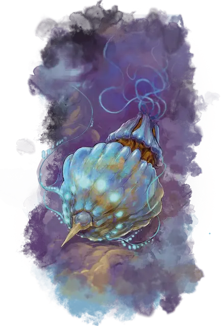

Эстетик
Esthetic
Громадная Аберрация, без мировоззрения

Класс Доспеха 14 (природный доспех)
Хиты 217 (14к20 + 70)
Скорость 0 футов, летая 60 футов (парит)
| мод | спас | ||
|---|---|---|---|
| СИЛ | 24 | +7 | +7 |
| ЛОВ | 8 | −1 | −1 |
| ТЕЛ | 20 | +5 | +5 |
| мод | спас | ||
|---|---|---|---|
| ИНТ | 1 | −5 | −5 |
| МДР | 10 | +0 | +0 |
| ХАР | 1 | −5 | −5 |
Иммунитет к урону кислота
Иммунитет к состояниям глухота, испуг, истощение, окаменение, ослепление, очарование, сбивание с ног
Чувства слепое зрение 30 футов (слеп за пределами этого радиуса), пассивное Восприятие 10
Опасность 12 (8400 опыта)
Бонус мастерства +4
Особенности
Биолюминесценция. Пока у эстетика есть хотя бы 1 хит, он излучает яркий свет в пределах 30 футов и тусклый свет в пределах ещё 30 футов, а его внутренние отсеки тускло освещены.
Чароходство. Эстетик обладает свойствами штурвала чарохода [spelljamming helm], но только создавший его рейгар может настроиться на руль.
Необычная природа. Эстетик не нуждается в воздухе, еде и питье.
Действия
Мультиатака. Эстетик совершает две атаки Щупальцами.
Щупальце. . Рукопашная атака оружием: +11 к попаданию, досягаемость 30 фт., одна цель. Попадание: 17 (3к6 + 7) урона силовым полем. Если цель — существо, она становится схваченной (Сл высвобождения 17). Пока цель схвачена, существо получает 18 (4к8) урона кислотой в начале каждого своего хода, а эстетик не может использовать это щупальце против других целей. У эстетика есть 1к4×2 щупалец, каждое из которых может схватить одну цель.
Бонусные действия
Глушащий крик (перезарядка 6). Эстетик выбирает один чароход в пределах 300 футов, волшебным образом подавляя свойства штурвала чарохода на 2к10 дней. Если на чароходе более одного руля, то определите случайным образом, какой из них будет поражен. Существо, настроенное на этот штурвал, может совершить спасбросок Харизмы Сл 17. При провале существо получает 42 (12к6) урона психической энергией, и штурвал выходит из строя на 2к10 часов вместо 2к10 дней. При успехе существо получает половину этого урона, а штурвал выходит из строя на 2к10 минут вместо 2к10 дней.
Описание
Эстетик — это биологическое, симбиотическое творение рейгаров. По сути, это органический корабль, обладающий лишь слабым намеком на сознание. Без рейгара направляющего его, эстетик становится почти лишённым разума существом с инстинктом самосохранения.
Рейгары используют своих эстетиков в качестве магических кораблей. Когда враждебный рейгар в своём эстетике сталкивается с другим космическим кораблем, он использует магическую вибрацию, чтобы отключить магический руль судна. Затем рейгар приказывает эстетику схватить членов экипажа корабля и растворить их плоть своими щупальцами, выделяющими кислоту.
Каждый эстетик обладает уникальным внешним видом. Он может быть зеркально-симметричным (две одинаковые половины, как у гуманоидов вдоль вертикальной оси), радиально-симметричным (как у морской звезды) или не иметь определенной формы. На расстоянии эстетика легко принять за гигантскую, обитающую в космосе медузу или кальмара. Его внешняя оболочка сделана из биолюминесцентной смолы.
В эстетике достаточно внутреннего пространства, чтобы с комфортом разместить хозяина-рейгара и до шести пассажиров Среднего размера. Доступ внутрь осуществляется через люк, который прикосновением может открыть или закрыть только рейгар.
Эстетик способен бесконечно долго существовать на Астральном плане, пока жив его создатель. Если создатель эстетика умирает, тот болеет в течение 1к12 дней, а затем погибает.